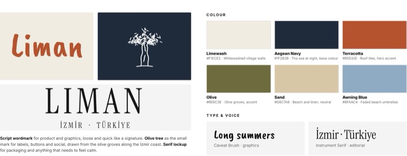
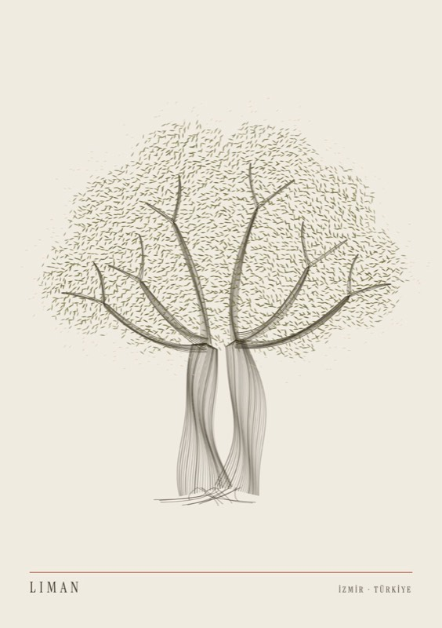
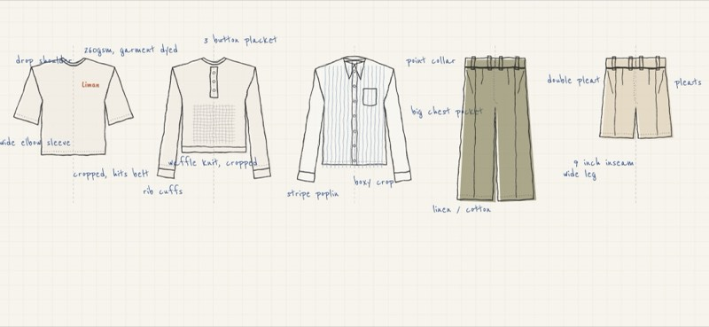
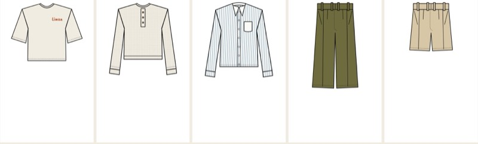
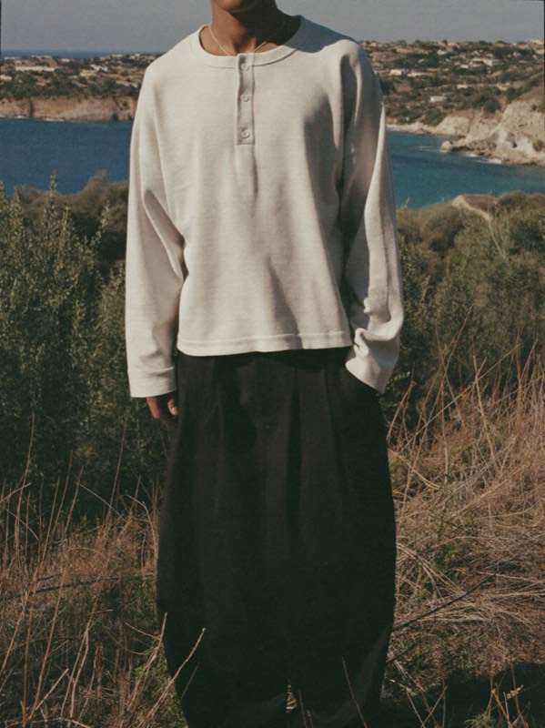
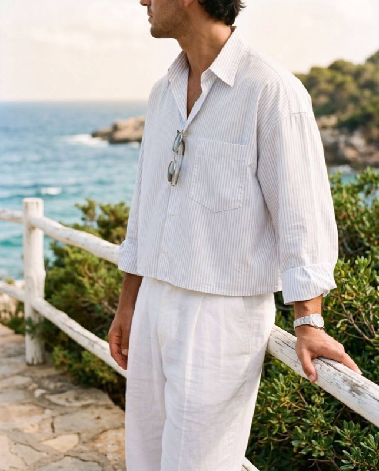
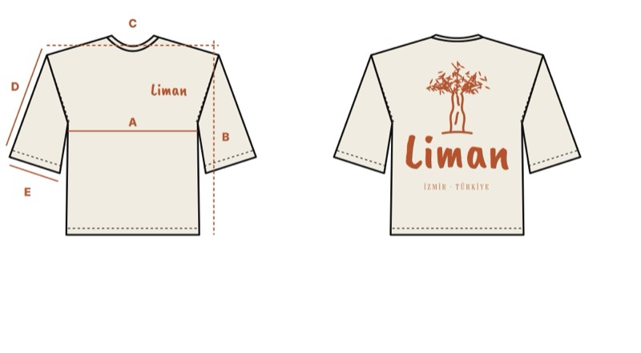
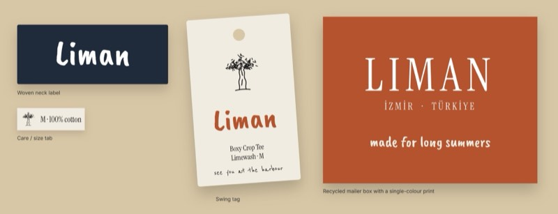

Liman
Liman means harbour in Turkish. It’s based in İzmir, where I spent my childhood summers on the coast, surrounded by olive trees. The label takes that feeling and turns it into cropped, boxy essentials with sun-faded colour and hand-drawn graphics.
cropped. boxy. made for long summers.

A brand that feels hand-made
A script wordmark for product and graphics, loose and quick like a signature. An olive tree as the small mark for labels, buttons and social, drawn from the olive groves along the İzmir coast. A serif lockup for packaging and anything that needs to feel calm.
Voice: short, warm, a bit dry. Never shouty. “See you at the harbour.”
Reference points for attitude, not copied: Stüssy’s hand-drawn graphics, Eme Studios and Twojeys, the oversized tailoring of SGO, Aimé Leon Dore’s line art and pleated trousers, and Represent’s cropped waffle and washed pieces. All marks drawn for Liman.

- Limewash
#F1ECE2· whitewashed village walls- Aegean Navy
#1F2B3B· the sea at night, base colour- Terracotta
#B5532E· roof tiles, hero accent- Olive
#6E6C3E· olive groves, accent- Sand
#D8C7A6· beach and linen, neutral- Awning Blue
#8FAAC4· faded beach umbrellas
One leaf, repeated until it becomes a tree.
The poster is built from a single olive leaf mark, placed thousands of times on a grid and turned by a made-up sea breeze. Where the leaves crowd, the tree appears. The trunk is drawn with fine twisting lines, the way old olive trunks on the Aegean coast look like they’ve been wrung out.
Text stays tiny and low, like a label sewn into a hem. The same leaf is used on tags, prints and social, so the whole brand speaks one visual language.

The one who packs light.
20 to 30, lives in a city but plans the year around summer. Five-a-side on Tuesdays, a flight to the Aegean in June, dinners that run late under the olive trees. Wants a small wardrobe that looks considered without trying, and buys fewer, better pieces.
One block, cut shorter and wider, across every top in the range.
- 01 · Cropped hits the belt
- Works with high, pleated trousers and wide shorts, the way people wear them now.
- 02 · Boxy means room
- Dropped shoulder and wide elbow sleeves for heat, movement and an easy drape.
- 03 · Sport meets tailoring
- A waffle henley from training kit and a stripe shirt from the holiday, cut from the same block.
First Summer, rough
Everything from one cropped block: drop shoulder, wide elbow sleeve, 260gsm garment-dyed jersey, a three-button waffle henley, a point-collar stripe shirt with a big chest pocket, and double-pleat wide-leg trousers and shorts in linen-cotton.

First Summer drop

- Boxy Crop Tee
- 260gsm jersey · garment dyed
- Waffle Henley
- Cotton waffle · 3-button placket · cropped
- Awning Stripe Shirt
- Poplin · point collar · cropped
- Double Pleat Trouser
- Linen-cotton · wide leg
- Pleated Short
- Linen-cotton · 9in inseam
Oversized, not sloppy.
Big, square tops cropped at the belt and very wide pleated trousers. The proportion takes cues from SGO and Represent, the line art from Aimé Leon Dore, softened with Aegean colour and an olive tree drawn by hand on the back.
see you at the harbour
AI-generated visualisations of my designs (Higgsfield).



Boxy Crop Tee, spec
8cm shorter and 10cm wider than a standard tee, so it sits at the belt and drapes square.
| Size M, cm | Standard | Liman | |
|---|---|---|---|
| A | Chest width | 52 | 62 |
| B | Body length (HPS) | 72 | 64 |
| C | Shoulder width | 46 | 60 |
| D | Sleeve length | 20 | 24 |
| E | Sleeve opening | 17 | 22 |
260gsm cotton jersey, garment dyed for a sun-faded finish · 2.2cm neck rib · twin-needle hems · water-based back print. Colourways: Limewash, Navy, Terracotta, Olive.

Labels, tags, packaging
A woven neck label, a care and size tab, a swing tag that signs off “see you at the harbour”, and a recycled mailer box with a single-colour print.
